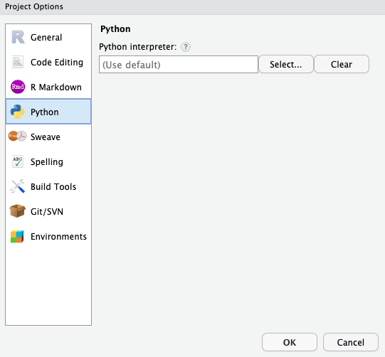
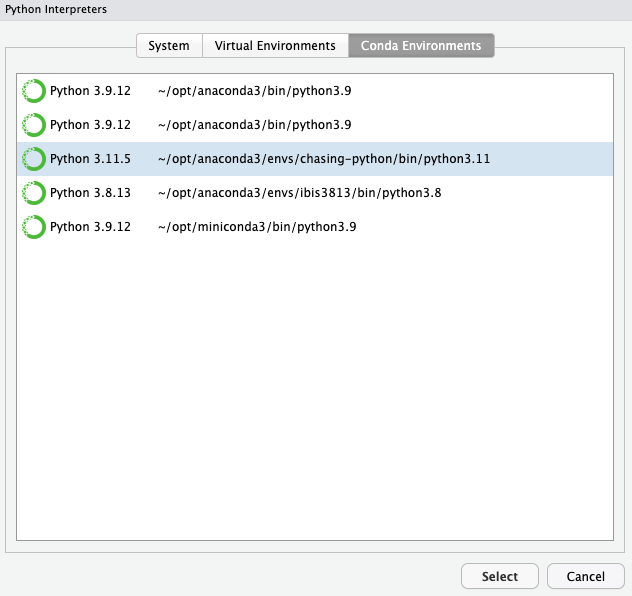

![]()
usethis::edit_r_environ(scope = "project")If you were trying to run a quarto document in Rstudio, it will run fine as long as your default python version has the correct libaries installed. But what if you are working on a project where project specific libraries are to be installed and used. And all to be setup in a python environment in RStudio?
It is possible. However, setting up a custom ananconda enrironment and using that specific python version is not that obvious. It is possible, however, if you have some time to spare to figure out from stackoverflow and some github issue queue and elsewhere.
Thankfully, I’ve figured it out after spending a couple of hours. I thought I would document this just in case I need it later or someone else might need it.
Here it is.
Steps at a glance
- Create python environment using Anaconda distribution. I use this because it is easy to use
- Install the necessary libraries in that environment
- Create a Quarto project in RStudio
- Set the project-specific
Renviron - Set the Python interpreter for your project in Rstudio
- Check if quarto and Jupyter is properly connected to the python version you want
- Render
Setting up Anaconda
I will skip this section assuming that you either have Anaconda installed or you are managing your python environment in some other ways. If you need help with that, please search on YouTube and there are good videos on this topic.
Setting up RStudio
The first this is to to create a separate Rstudio project to house your code and documents. We’re obviously using Pyhon with the Jupyter engine to run the Quarto document.
Check your current jupyter engine
From within Rstudio, uset the Terminal tab (bottom left panel). It should open termina within Rstudio. On the CLI, type the following
quarto check jupyterThis should produce an output like the following:
[✓] Checking Python 3 installation....OK
Version: 3.8.13 (Conda)
Path: /Users/enayetraheem/opt/anaconda3/envs/ibis3813/bin/python
Jupyter: 4.10.0
Kernels: python3
[✓] Checking Jupyter engine render....OKNotice that it shows the current Python engine, which is /Users/enayetraheem/opt/anaconda3/envs/ibis3813. Also we can see the Jupyter version here.
Where does Rstudio get this information from?
The short answer is: from the global .Renviron file. In the current Renviron, this is what I have.
QUARTO_PYTHON=/Users/enayetraheem/opt/anaconda3/envs/ibis3813/bin/pythonIf you want to use this python environment, then you are good. It should run Pyton without issues. Also make sure new libraries are installed in this environment for you to use them in this notebook.
The problem
The problem occurs when you want to use a different environment! The one you see above is the global environment. This will be chosen by RStudio unless you specify a project specific .Renviron.
The solution seems easy that you want to set the project specific environment from the Tools?
Lets take a look at the current setup.

There is no Python interpreter set for the current project. We can set one but that won’t actually work.
Let’s set the python interpreter to be the following:

Now lets restart RStudio just in case. And check back quarto
When you run quarto check jupyer, you would get the same response as before, and not the Pyton you’ve set up with as the screenshot above.
The solution
The solution is to set project specific .Renviron
When you execute this, it will open up the editor where you can put the following information
QUARTO_PYTHON=/Users/enayetraheem/opt/anaconda3/envs/chasing-python/bin/python3.11Restart
Make sure to restart your entire RStudio and then reopen the project. Then run in the terminal the
quarto check jupyterwhich should render the following
[✓] Checking Python 3 installation....OK
Version: 3.11.5 (Conda)
Path: /Users/enayetraheem/opt/anaconda3/envs/chasing-python/bin/python3.11
Jupyter: 5.5.0
Kernels: python3
[✓] Checking Jupyter engine render....OKSummary
This article demonstrated the steps to set a Python interpreter in a local RStudio project. We used Anaconda Python package manager to create and manage the envs. Then we use usethis::edit_r_environ() library with scope="project" argument to edit the project specific python interpreter.
Credits
The social sharing image was generated using Bing with the prompt “Rendering Quarto document in Rstudio with Anaconda Python environment”
Citation
BibTeX citation:
@online{raheem2023,
author = {Raheem, Enayetur},
title = {Rendering {Quarto} Document with {Anaconda} {Python}
Environment in {RStudio/Posit}},
date = {2023-11-20},
url = {https://www.eraheem.com/blog/2023/11/20/quarto-jupyter-conda-env-rstudio-config},
langid = {en}
}
For attribution, please cite this work as:
Raheem, Enayetur. 2023. “Rendering Quarto Document with Anaconda
Python Environment in RStudio/Posit.” November 20, 2023. https://www.eraheem.com/blog/2023/11/20/quarto-jupyter-conda-env-rstudio-config.